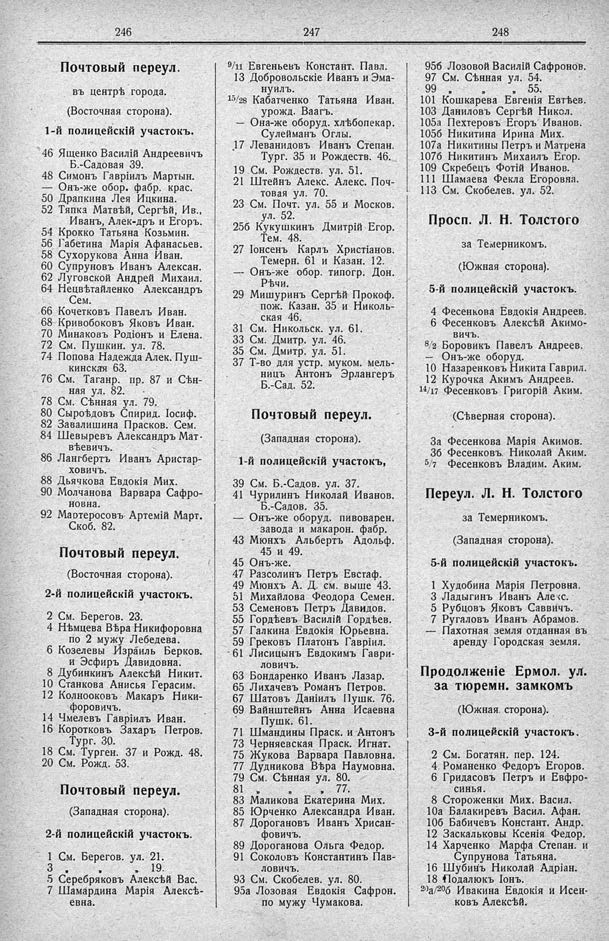

Лист источника 214
Скан

Распознанный текст
246
Почтовый переул.
въ центрѣ города.
(Восточная сторона).
1-й полицейскій участокъ.
46 Ященко Василій Андреевичъ
Б.-Садовая 39.
48 Симонъ Гавріилъ Мартын.
— Онъ-же обор. фабр. крас.
50 Драпкина Лея Ицкина.
52 Тяпка Матвѣй, Сергѣй, Ив.,
Иванъ, Алек-дръ и Егоръ.
54 Крокко Татьяна Козьмин.
56 Габетина Марія Афанасьев.
58 Сухорукова Анна Иван.
60 Супруновъ Иванъ Алексан.
62 Луговской Андрей Михаил.
64 Нецвѣтайленко Александръ
Сем.
66 Кочетковъ Павелъ Иван.
68 Кривобоковъ Яковъ Иван.
70 Минаковъ Родіонъ и Елена.
72 См. Пушкин. ул. 78.
74 Попова Надежда Алек. Пуш-
кинская 63.
76 См. Таганр. пр. 87 и Сѣн-
ная ул. 82.
78 См. Сѣнная ул. 79.
80 Сыроѣдовъ Спирид. Іосиф.
82 Завалишина Прасков. Сем.
84 Шевыревъ Александръ Мат-
вѣевичъ.
86 Лангбертъ Иванъ Аристар-
ховичъ.
88 Дьячкова Евдокія Мих.
90 Молчанова Варвара Сафро-
новна.
92 Мартеросовъ Артемій Март.
Скоб. 82.
Почтовый переул.
(Восточная сторона).
2-й полицейскій участокъ.
2 См. Берегов. 23.
4 Нѣмцева Вѣра Никифоровна
по 2 мужу Лебедева.
6 Козелевы Израиль Берков.
и Эсфиръ Давидовна.
8 Дубинкинъ Алексѣй Никит.
10 Станкова Анисья Герасим.
12 Колнооковъ Макаръ Ники-
форовичъ.
14 Чмелевъ Гавріилъ Иван.
16 Коротковъ Захаръ Петров.
Тург. 30.
18 См. Турген. 37 и Рожд. 48.
20 См. Рожд. 53.
Почтовый переул.
(Западная сторона).
2-й полицейскій участокъ.
1 См. Берегов. ул. 21.
3 " " 19.
5 Серебряковъ Алексѣй Вас.
7 Шамардина Марія Алексѣ-
евна.
247
9/11 Евгеньевъ Констант. Павл.
13 Добровольскіе Иванъ и Эма-
нуилъ.
15/28 Кабатченко Татьяна Иван.
урожд. Ваагъ.
— Она-же оборуд. хлѣбопекар.
Сулейманъ Оглы.
17 Леванидовъ Иванъ Степан.
Тург. 35 и Рождеств. 46.
19 См. Рождеств. ул. 51.
21 Штейнъ Алекс. Алекс. Поч-
товая ул. 70.
23 См. Почт. ул. 55 и Москов.
ул. 52.
25б Кукушкинъ Дмитрій Егор.
Тем. 48.
27 Іонсенъ Карлъ Христіанов.
Темерн. 61 и Казан. 12.
— Онъ-же обор. типогр. Дон.
Рѣчи.
29 Мишуринъ Сергѣй Прокоф.
пож. Казан. 35 и Николь-
ская 46.
31 См. Никольск. ул. 61.
33 См. Дмитр. ул. 46.
35 См. Дмитр. ул. 51.
37 Т-во для устр. муком. мель-
ницъ Антонъ Эрлангеръ
Б.-Сад. 52.
Почтовый переул.
(Западная сторона).
1-й полицейскій участокъ,
39 См. Б.-Садов. ул. 37.
41 Чурилинъ Николай Иванов.
Б.-Садов. 35.
— Онъ-же оборуд. пивоварен.
завода и макарон. фабр.
43 Мюнхъ Альбертъ Адольф.
45 и 49.
45 Онъ-же.
47 Разсолинъ Петръ Евстаф.
49 Мюнхъ А. Д. см. выше 43.
51 Михайлова Феодора Семен.
53 Семеновъ Петръ Давидов.
55 Гордѣевъ Василій Гордѣев.
57 Галкина Евдокія Юрьевна.
59 Грековъ Платонъ Гавріил.
61 Лисицынъ Евдокимъ Гаври-
ловичъ.
63 Бондаренко Иванъ Лазар.
65 Лихачевъ Романъ Петров.
67 Шатовъ Даніилъ Пушк. 76.
69 Вайнштейнъ Анна Исаевна
Пушк. 61.
71 Шмандины Праск. и Антонъ
73 Черняевская Праск. Игнат.
75 Жукова Варвара Павловна.
77 Дудникова Вѣра Наумовна.
79 См. Сѣнная ул. 80.
81 " " 77.
83 Маликова Екатерина Мих.
85 Юрченко Александра Иван.
87 Дорогановъ Иванъ Хрисан-
фовичъ.
89 Дороганова Ольга Федор.
91 Соколовъ Константинъ Пав-
ловичъ.
93 См. Скобелев. ул. 80.
95а Лозовая Евдокія Сафрон.
по мужу Чумакова.
248
95б Лозовой Василій Сафронов.
97 См. Сѣнная ул. 54.
99 " " 55.
101 Кошкарева Евгенія Евтѣев.
103 Даниловъ Сергѣй Никол.
105а Пехтеровъ Егоръ Иванов.
105б Никитина Ирина Мих.
107а Никитины Петръ и Матрена
107б Никитинъ Михаилъ Егор.
109 Скребецъ Фотій Иванов.
111 Шамаева Фекла Егоровна.
113 См. Скобелев. ул. 52.
Просп. Л. Н. Толстого
за Темерникомъ.
(Южная сторона).
5-й полицейскій участокъ.
4 Фесенкова Евдокія Андреев.
6 Фесенковъ Алексѣй Акимо-
вичъ.
8/2 Боровикъ Павелъ Андреев.
— Онъ-же оборуд.
10 Назаренковъ Никита Гаврил.
12 Курочка Акимъ Андреев.
14/17 Фесенковъ Григорій Аким.
(Сѣверная сторона).
3а Фесенкова Марія Акимов.
3б Фесенковъ Николай Аким.
5/7 Фесенковъ Владим. Аким.
Переул. Л. Н. Толстого
за Темерникомъ.
(Западная сторона).
5-й полицейскій участокъ.
1 Худобина Марія Петровна.
3 Ладыгинъ Иванъ Алекс.
5 Рубцовъ Яковъ Саввичъ.
7 Ругаловъ Иванъ Абрамов.
— Пахотная земля отданная въ
аренду Городская земля.
Продолженіе Ермол. ул.
за тюремн. замкомъ
(Южная сторона).
3-й полицейскій участокъ.
2 См. Богат. пер. 124.
4 Романенко Федоръ Егоров.
6 Гридасовъ Петръ и Евфро-
синья.
8 Стороженки Мих. Васил.
10а Балакиревъ Васил. Афан.
10б Бабичевъ Констант. Андр.
12 Заскальковы Ксенія Федор.
14 Харченко Марфа Степан. и
Супрунова Татьяна.
16 Шубинъ Николай Адріан.
18 Подалюкъ Іонъ.
20а/20б Ивакина Евдокія и Исен-
ковъ Алексѣй.